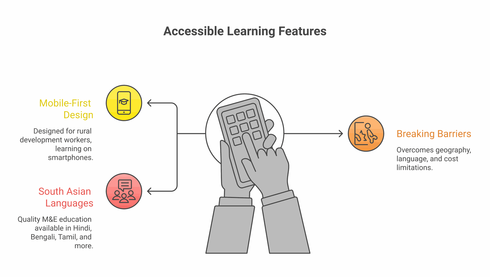

Behind every data point in our analytics, there's a real person building real skills. Development practitioners across South Asia who are navigating the gap between where they are and where they want to be—often with limited resources and competing demands on their time.
These are some of their stories. Names and identifying details have been changed, but the journeys are real.

The Accidental M&E Officer
I was hired as a programme coordinator. Six months in, my director told me I was now also responsible for M&E. I didn't even know what the acronym stood for.
Priya's story is common across the sector. Organisations need M&E capacity but can't afford dedicated specialists. So the responsibility falls to whoever seems capable—often without any training or support.
When Priya found ImpactMojo, she was three months into her M&E role and struggling. She'd inherited a logframe that made no sense to her and was expected to produce quarterly reports she didn't know how to write.
"The difference wasn't just knowing the concepts. It was having practiced them in the labs before I had to do them for real. When I sat down to write that first report, I'd already done something similar three times."
The Career Changer
I spent eight years in corporate marketing before realising I wanted work that meant something more. But I had no idea how to translate my skills into the development sector.
Amit's marketing background gave him skills in data analysis and communication—but development sector employers saw only his lack of sector experience. Traditional pathways would have required years of academic study he couldn't afford to take.
Instead, Amit built a portfolio of development-relevant skills through ImpactMojo courses, complemented the learning with volunteer work at a local NGO, and documented his journey on LinkedIn.
Amit's Approach
- Completed Theory of Change and MEAL courses in evenings after work
- Applied skills as a pro-bono consultant for a small education NGO
- Built case studies from his volunteer work to show practical application
- Connected with other career changers in ImpactMojo's community
Within a year, Amit had transitioned to a communications role at an INGO—a position that valued both his marketing expertise and his newly-developed sector knowledge.
The Rural Practitioner
Every M&E training I found was in Delhi or Mumbai. By the time you add travel, accommodation, and time away from work, it was impossible. And the content never seemed relevant to the challenges we face in rural Odisha.
Sunita works with a community-based organisation focused on women's self-help groups. She'd been doing M&E work for years—mostly by intuition and common sense—but felt she was missing formal knowledge that could make her more effective.
The mobile-first design meant Sunita could learn on her smartphone, in Hindi, during whatever time she could find between field visits and family responsibilities. The case studies featuring rural contexts and SHG examples made the content immediately applicable.

"For the first time, I could explain to my colleagues why we track the indicators we track. Not just 'because the donor wants it' but because this is how we know if we're actually creating change."
What These Stories Share
Despite their different contexts, these practitioners share common threads:
- Practical constraints: Limited time, limited budgets, competing responsibilities
- Immediate needs: Skills required for real work they're already doing
- Context matters: Generic international content wasn't meeting their needs
- Learning as doing: They needed to apply skills, not just understand concepts
This is what ImpactMojo is designed for. Not abstract learning for its own sake, but practical skill-building for people doing real work under real constraints.
The Ripple Effect
What strikes us most is how learning multiplies. Priya trained her colleagues. Amit mentors other career changers. Sunita shares what she learns with neighbouring organisations.
Every practitioner who builds skills doesn't just improve their own work—they strengthen the ecosystem around them. That's the kind of capacity building that creates lasting change.
Your Story
If you're reading this, you might be at the beginning of your own journey. Maybe you've just been handed M&E responsibilities, like Priya. Maybe you're contemplating a career change, like Amit. Maybe you're doing good work in a challenging context, like Sunita, and want to do it even better.
Wherever you're starting from, there's a path forward. And you don't have to walk it alone.